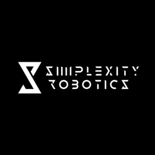

RoboBench
was accepted to ECCV 2026.
Xiangju Mi 米相举
Hi there! I am a third-year undergraduate student at Peking University. And I am fortunate to be advised by Prof. Shanghang Zhang at the HMI Lab.
Currently, my research interests center on humanoid robotics, dexterous manipulation, and agentic learning.
Beyond research, I enjoy exploring physics and playing basketball.
Research Interests
I am interested in building general-purpose embodied agents that learn and act reliably in the physical world.
A central question for me is how robots can acquire reusable skills from diverse experience, compose them for new tasks, and improve through interaction. I hope to develop policies that generalize across tasks and environments, adapt to unfamiliar situations, and recover from failure.
News
Released
LaST-HD,
aligning human-hand and robot demonstrations through world-model
latents for efficient cross-embodiment learning.
LaST0
was accepted to ICML 2026 as a
Spotlight
(top 2.2%).
Released
LaST0,
a token-efficient framework for latent physical reasoning before
action generation.
Released
RoboMIND 2.0,
a large-scale multimodal dataset for bimanual and mobile manipulation.
Selected Publications
* Equal contribution.
Education
Peking University
– PresentB.S. in Theoretical and Applied Mechanics (Minor in Robotics Engineering)
Research Experience

Human Machine Intelligence Lab
– PresentResearch Intern · Peking University
Embodied AI · World Models
Advisor: Prof. Shanghang Zhang